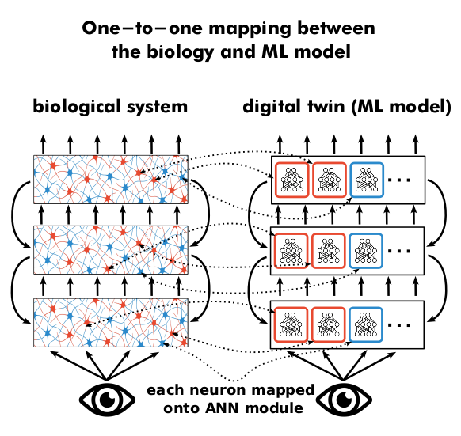
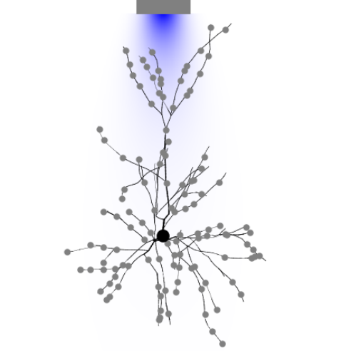
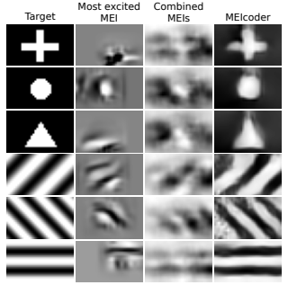
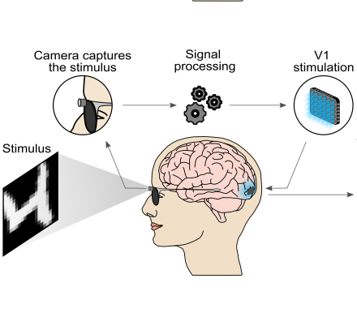
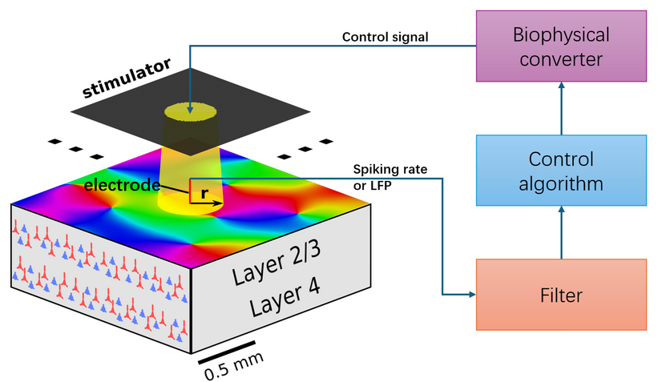

| "Glass-box" digital twins of the visual cortex | |
|  |
We are developing biologically constrained recurrent neural network (RNN) architectures as “glass-box” digital twins of cortical visual circuits. Today’s deep-learning models can predict neural responses, but their internal elements rarely map onto identifiable biology, limiting mechanistic understanding and the ability to guide interventions. Our approach starts from known cortical structure—cell types, excitation–inhibition balance, laminar organisation, and circuit dynamics—and builds these constraints directly into learnable recurrent models. We can train these models using multiple experimental observables (not just input–output behaviour) so that fitted components directly correspond to biological counterparts. Using the early visual system as a testbed, we aim to deliver accurate, interpretable circuit models and novel neuroscience-inspired RNN designs. |
| Role of neural morphology and network effects in optogenetic cortical stimulation. | |
|  |
Optogenetics is a powerful tool for manipulating neural activity, yet its spatial precision is often limited by light scattering and the expansive neural morphology. This project utilizes morphology-aware, large-scale simulations to investigate how neuronal structure influences stimulation outcomes under realistic illumination conditions. We discovered a paradoxical "sharpening" effect where apical dendrites, by sampling less scattered light from the superficial cortex, counteract the dispersion of light at deeper levels. While synaptic transmission naturally spreads activity, incorporating these dendritic properties paradoxically enhances the spatial focus of stimulation. These findings provide critical insights for designing more precise optogenetic protocols and improving the resolution of future cortical neuroprostheses. |
| MEIcoder: the visual system decoding framework | |
|  |
Understanding how the brain represents the world requires the ability to reconstruct visual stimuli from observed neural activity. This project develops MEIcoder, a novel decoding framework that leverages "Most Exciting Inputs" (MEIs)—the visual patterns that most effectively drive specific neurons—to improve reconstruction accuracy. By integrating these functional priors into a deep learning architecture, MEIcoder translates high-dimensional neural signals back into representative images. This approach not only enhances our ability to decode what an animal is seeing but we are also using this decoding framework to understand how visual percepts are evoked by artificial stimulation of visual cortex. |
| Talking to the visual cortex in its own language | |
|  |
Traditional cortical prostheses rely solely on retinotopic maps, often failing to recreate complex visual percepts. This project introduces a breakthrough stimulation protocol that incorporates native orientation selectivity into the neural interface. Leveraging a Bottlenecked Rotation-Equivariant CNN (BRCNN), we can predict neural responses solely based on position and orientation preference of activated neurons. We can turn this response predicitve model into model that predicts stimulation strength given input image and knowledge of retinotopic and orientation preference map under the implant. Validated in a large-scale visual system simulation framework, this dual-encoding strategy elicits neural activity patterns that more closely resemble natural vision compared to current approaches. This research paves the way for advanced neuroprostheses capable of restoring more meaningful and high-fidelity visual experiences for the blind. |
| Closed loop cortical neural control | |
|  |
State-dependent excitability and spontaneous cortical activity can make neuroprosthetic stimulation unreliable: the same input may produce very different neural responses and percepts, especially in blindness. In this project, we develop a biophysically grounded, closed-loop optogenetic control framework that compensates for cortical “noise” and reliably drives activity in a targeted V1 cortical column along a desired time course. We combine a large-scale spiking model of mammalian primary visual cortex with a detailed model of optogenetic stimulation that includes light dispersion in tissue and channelrhodopsin dynamics. We benchmark multiple feedback controllers (PID, LMS, and LQR) against open-loop stimulation and show that closed-loop control reduces tracking error, response variability, and response latency. The result is a practical pathway toward more consistent, higher-contrast percepts for future visual prostheses. |
| Model of V2 processing and beyond. | |
 |
Having successfully created a comprehensive model of V1 (see below), we are now expanding our modelling efforts beyond the primary visual cortical area, focusing particularly on area V2 and in future also V4. Upon construction of the expanded model we will focus on probing the model for presence of sensitivity to higher-order correlations in the visual stimuli, sensitivity to illusory contours and presence of figure-ground segregation signals. |
| Cortical visual prosthesis: a detailed large-scale cortical simulation study. | |
 |
Recent advances in optogenetics are opening path towards development of light stimulation based cortical prosthetic devices. However, two fundamental aspects of the cortical optogenetic prosthesis remain unclear. First, the exact behavior of cortical physiology under direct stimulation, especially in the context of active and functionally specific neural circuitry, is poorly understood. Second, we lack strategies for transformation of visual stimuli into light patterns that induce cortical activity similar to that due to stimulation via retina. We address these issues using a large-scale spiking neural network modeling strategy of high biological fidelity. We examine the relationship between configuration of light delivered to cortex and the resulting spatio-temporal pattern of activity evoked in the simulated cortex. We design a protocol for translation of visual stimuli to activation patterns of LED array and provide a assessment of the resulting cortical activations with respect to the natural vision condition. |
| A reassessment of stimulus dependence of receptive fields in primary visual cortex. | |
 |
This is the PhD project of Margot Larroche that I supervise together with Cyril Monier. Estimation of RF model based on an ensemble of visual stimuli and associated neural responses is a common approach for studying neuronal coding in V1. The interpretability of such models has, however, been regularly challenged due to the stimulus dependence of their fits, i.e. their failure to generalize between different stimulus statistics. However, the compared stimulus sets were often insufficiently controlled for a number of basic parameters, putting in question their interpretation. In this project, we use a carefully designed set of visual stimuli to characterize short-term RF stimulus-dependence phenomena using dense multi-electrode extracellular recordings of neuronal responses in cat V1. We estimate RF models including novel multi-stage L-NL cascade architecture for each stimulus type, compute cross-prediction performances, and analyze differences between fits. |
| Model of thalamo-cortical loop of cat visual system. | |
|
This is the PhD project of Domenico Guarino. What are the functional properties of the thalamo-cortical loop? In the early visual system of the cat, the feedforward pathway going from the lateral geniculate nucleus (LGN) to the primary visual cortex (V1) is well characterized both anatomically and functionally. But, in spite of the amount of experimental work, there is still poor agreement on possible roles for the feedback pathway going from V1 to LGN. We addressed this issue dividing the available experimental data into open-loop conditions, where the thalamus was probed in isolation from cortex, and closed-loop conditions, where the intact system was probed. We explored these same conditions with a biologically plausible integrative large-scale model of the cat early visual system that includes: LGN, peri-geniculate nucleus (PGN), and V1. |
|
| Comprehensive model of cat primary visual cortex. | |
|
Neuroscience has produced an immense amount of data on the function and anatomy of early visual areas. However, the transformation of this knowledge into a general coherent understanding has so far been limited. Computational modeling can integrate such fragmented data by building models of brain structures that satisfy the broad range of constraints imposed by experiments, thus advancing our understanding of their computational role, and their implementation in the neural substrate. In this project we aim to build a comprehensive multi-scale spiking model of cat primary visual cortex which satisfies a unprecedented range of experimentally identified anatomical, statistical and functional properties. In future we will expand the scope of the model beyond primary visual cortex. |
|
| Receptive fields identification in local populations of V1 neurons. | |
|
|
One of the key goals of sensory neuroscience is to identify the relationship between stimuli and neural responses. A common approch of identifying the stimulus-response function is to present a large collection of stimuli while responses of sensory neurons are recorded. Numerous methods for estimating the stimulus-response function from such data has been proposed in the past but no took advantage of the known architecture of primary visual cortex (V1) and the fact that a local population of V1 neurons shares limited pool of thalamic inputs. In this project we investigate a novel method for estimating the stimulus-response function in a population of neurons that implicitly assumes the discussed architecture of V1. |